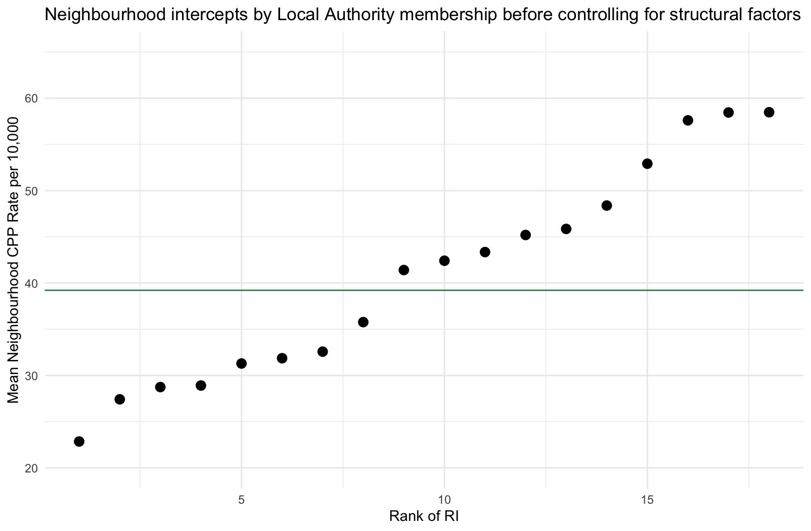
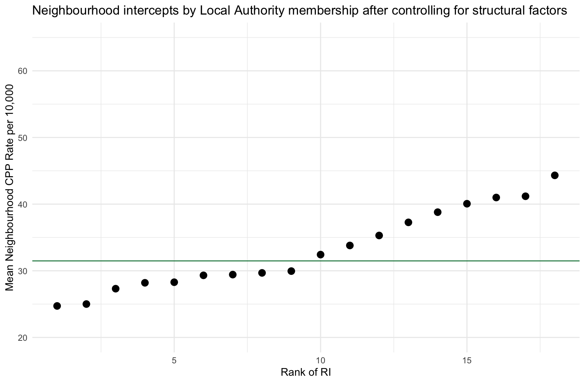

Back in January 2019, the National Audit Office published a report which claimed that 44 per cent of the variance in Local Authority Child Protection Plans could be explained by ‘local authority characteristics’ other than deprivation (which could explain 15 per cent). Although they never claimed this, the finding was largely interpreted as evidence that local authority policy and practice was more important than structural disadvantage - by some magnitude. However, an analysis by myself and colleagues of the Child Welfare Inequalities Project recently published in Children and Youth Services Review found that once start to look at deprivation and other structural factors at the neighbourhood level, differences between local authorities practically disappear.
The Nuffield Foundation funded a small extension to our original project to use some more complex modelling techniques on the data we had collected from 18 systematically chosen local authorities. These local authorities were chosen to be a representative sample of all local authorities in England, reflecting many different regions and varying levels of deprivation and ethnic makeup. For this analysis we aggregated Child Protection Plan and Children Looked After records up to the Lower Super Output Area level and joined several LSOA measures onto this data. Briefly, an LSOA can be thought of as a large ‘neighbourhood’, with around 1,500 people living in it. This contrasted to the NAO’s approach which, although not made transparent, used far less granular local authority level data.
How does local authority variation change before and after controlling for structural factors?
Using a multilevel model we were able to get a measure of local authority level variation in average neighbourhood rates of Child Protection Plans (we also looked at Children in Need and Children Looked After rates in the full paper). A simple explanation of this is that we calculated a list of how much each local authority’s average neighbourhood rates of intervention differed. Before we take account of any structural factors, like deprivation or ethnicity, the variation for local authorities comes out as 0.1047. This is a ‘raw’ amount of variation between local authorities. We can get a sense of what this means if we plot all of these variations around the mean rates.

In the plot above we can see our model’s predictions for each of our 18 local authorities. The green line represents the average CPP rate across all local authorities (around 39 plans per 10,000 children). The points below the green line are local authorities with average neighbourhood rates below the average, and the points above the green line are those with higher than average rates. As you can see, there is a lot of local authority variance - some have average neighbourhood CPP rates approaching 60 children per 10,000, others have rates lower than 25 per 10,000. Surely we should rush to the local authority with much lower rates in their neighbourhoods to find out how their policies and practice differs, right?
Before we do so, let’s have a look at how our local authority variance changes once we control for structural factors. Structural factors are societal things that influence outcomes - like peoples’ health or exposure to risks or advantages. They are unequally distributed across local authorities, so what might look like a difference caused by local authority membership (and something specific about how that local authority does things) might actually be representing differences in structural dis/advantage. Esssentially, if we switched around the structural inequalities in local authorities we would expect the outcomes to switch around too, regardless of the local authority we’re switching from/too. The full list of structural inequalities we included in our model were:
- Neighbourhood deprivation
- Local Authority deprivation
- Ethnic density of different ethnic groups
- Unemployment levels
- Infant Mortality
- Population education levels
- Income inequality
- The ‘inverse intervention law’ and the ‘inequalities intervention law’
The last two structural factors require some explanation. We observed in earlier research that deprivation had a different impact of child welfare interventions depending on how widespread deprivation was in the wider area. We also found that the same thing happened with income inequality. In short, deprivation was more strongly linked to child welfare interventions in less deprived, more unequal local authorities. So what happens to our local authority variance after we control for all of these factors?

So should we ignore local authority differences in policy and practice?
No. Unfortunately it is not as simple as that. The Inverse Intervention Law and the Inequalities Intervention Law demonstrate that the same structural disadvantage can result in very different child welfare inequalities depending on the local authority context.
Our research shows that what is important is the space where local authority policy and practice meets structural inequality, and how well local children’s services can respond to, alleviate, and challenge structural disadvantage. It is not a case of one or the other, structural disadvantage or practice and policy, but both in relation to one another. As such, the most effective changes to children’s services are likely to be found in those approaches that effectively merge child protection policy and practice with and within a structural inequalities framework.